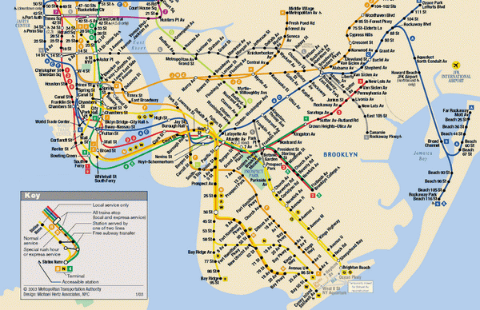

5 причин внедрить программу
В современном мире основным источником физического труда выступает – техника, а интеллект и знания – это товар, который цениться больше всего...
просмотр
Для меня главное – это роль технологии, её связь с человеческим капиталом и человеческим потенциалом. Технологии дают возможность делать великие вещи. Вы должны быть оптимистично настроены в отношении того, что технология может сделать в руках человека
Сатья Наделла
Программа для расчета маршрута или как получить желаемый результат в оптимизации процесса маршрутизации. Базовые понятия в построении кратчайших маршрутов, которые относятся к теории графов. И в заключение – небольшая задачка для логистов.
Вначале стоит отметить роль технологий не только в деятельности компании, но и жизни каждого человека. Ниже приведены несколько цитат известных людей в ИТ сфере, которые, по нашему мнению, в точности передают суть понятия.
Программа – это определенный инструмент, который на входе получает необходимые, точные данные для того, чтобы на выходе показать нам результат в ходе реализации определенного алгоритма. Сегодня информационные технологии стремительно развиваются. Есть даже определенная эмпирически подмеченная закономерность, которая получила название закон Мура, став при этом самым известным законом в ИТ-сфере. С развитием ИТ повышается темп экономического роста и увеличивается производительность труда. Теперь давайте рассмотрим, как развитие современных технологий отразилось на логистических процессах.
Программа для расчета логистики – это система, которая имеет мощную среду для получения желаемых результатов в оптимизации процесса маршрутизации. Но для наибольшего эффекта важно не забывать 2 основополагающих принципа работы с программой для расчета маршрута:
Наверное, все знают, что такое калькулятор и как им пользоваться. Так вот, давайте с его помощью проделаем ряд операций:
Наличие в арсенале логиста мощного инструмента автоматизации позволяет достичь поставленных целей, а понимание основных процессов построения маршрутов, гарантирует достижение максимально желаемого результата от внедрения программы планирования маршрутов. Хотим обратить ваше внимание на основные базовые понятия в построении кратчайших маршрутов, которые относятся к теории графов, это:
Ценность любого алгоритма состоит в его эффективности, времени работы программы и в легкости написания данного алгоритма.
GPS, карты и автомобильные маршруты, представленные в интернете, — еще один прекрасный пример использования графов. Графы помогают наглядно представить себе схемы общественного транспорта, что облегчает планирование поездки. Четкость и простота играют решающую роль в создании таких графов, как схема нью-йоркского метро, которое ежедневно обслуживает миллионы пассажиров
Интересный факт:
В 1909 году управляющий лондонским метрополитеном Фрэнк Пик, который курировал вопросы дизайна, поручил дизайнерам разработку схем метро, которые помогли бы пассажирам перемещаться по сложной сети линий и станций. Многие дизайнеры потерпели неудачу, так как на их схемах не соединенные друг с другом станции изображались поверх карты города, из-за чего пассажирам было непонятно, какую линию метро нужно выбрать. Задачу решил инженер и дизайнер Генри Бек (1903–1974). Гениальность идеи Бека состояла в том, что он упростил схему, сохранив лишь основу графа линий и станций метро. Он расположил линии и станции так, что линии пересекались под углом в 45 или 90°, за счет чего схема становилась очень наглядной. В качестве единственной привязки к местности на схеме осталась только река Темза.
Небольшая задачка:
Однажды великому математику Леонарду Эйлеру был задан вопрос: можно ли обойти все семь мостов, стоявших тогда в городе Кёнигсберге (современный Калининград, Россия), побывав на каждом по одному разу? Перед вами план Кёнигсберга – можете попробовать!
В 1736 году Эйлер решил данную задачу, таким образом изобрел эйлеровые циклы.

В современном мире основным источником физического труда выступает – техника, а интеллект и знания – это товар, который цениться больше всего...
просмотр
В наше время высокий уровень конкуренции стал одной из основных причин перераспределения расходов компании, так как ранее рентабельность предприятий составляла...
просмотр
Программа – это определенный инструмент, который на входе получает необходимые, точные данные для того, чтобы на выходе показать нам результат...
просмотр
Задача коммивояжёра («Travelling salesman problem», TSP) – одна из самых известных и важных задач транспортной логистики...
просмотр
Технологии не стоят на месте, благодаря широкому применению и распространению систем GPS мониторинга...
просмотр
Повышение качества обслуживания – одна из ключевых целей каждой компании XXI века. Джефф Безос говорил...
просмотр